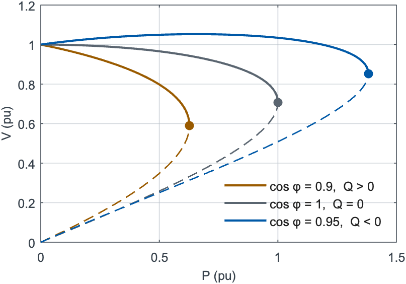
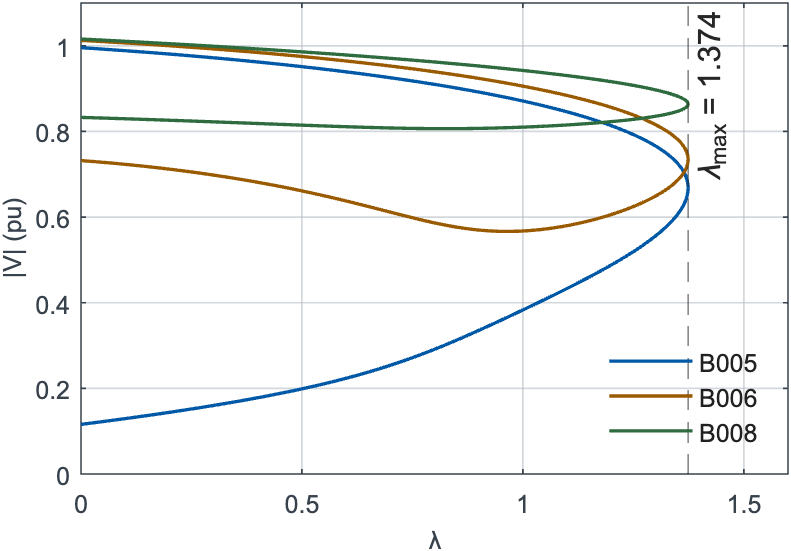
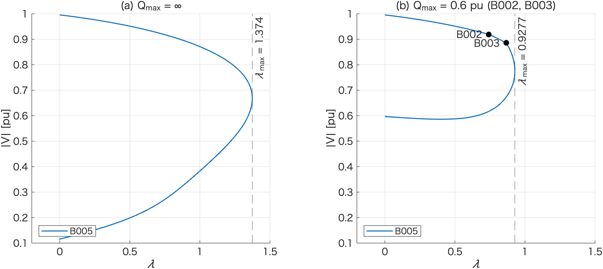
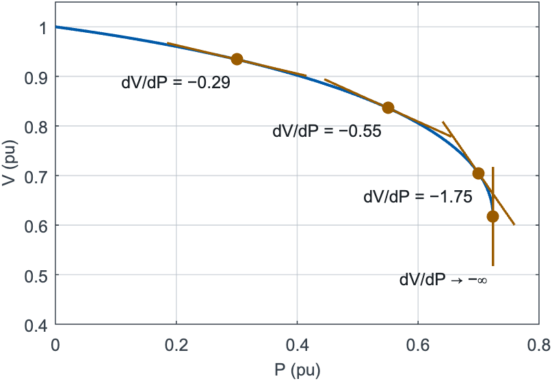
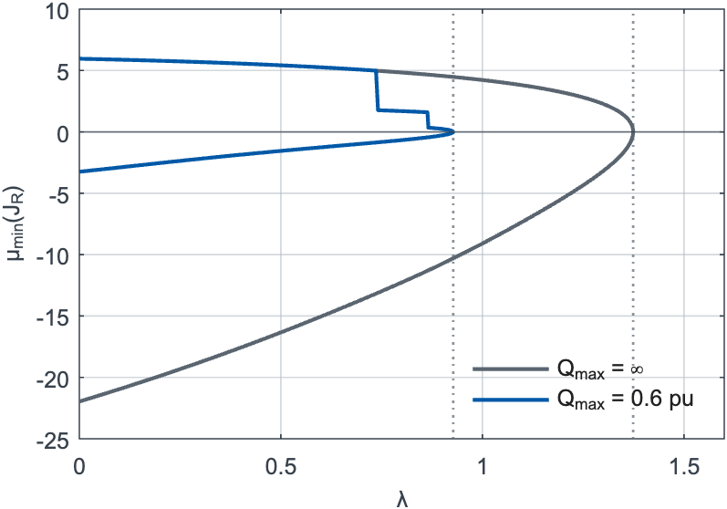
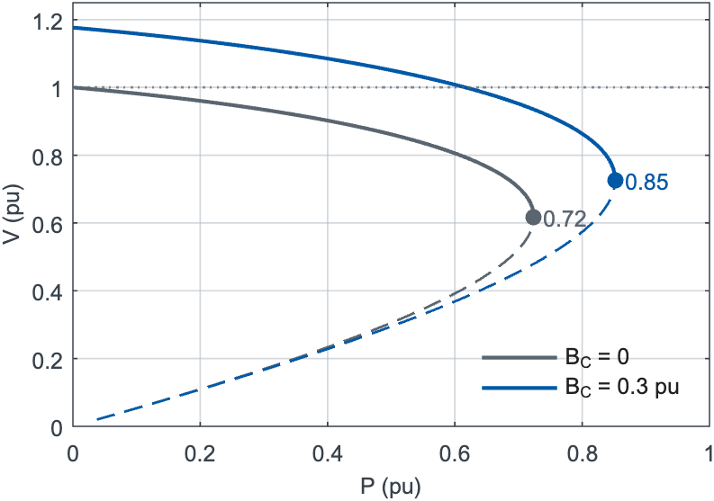

What this Part coversこの Part の内容
- What a PV curve is, and why every system has a largest load it can supply: the nose point.PV カーブとは何か。どの系統にも供給できる負荷の上限（ノーズ点）がある理由。
- What a voltage collapse looks like, with the 1987 blackout in the Tokyo area as an example.電圧崩壊とはどんな現象か。1987 年の首都圏の大停電を例に。
- Why reactive power decides how far the voltage can be held, and how the reactive power limits of generators bend the curve.電圧を保てるかどうかを無効電力が決める理由と、発電機の無効電力の限界でカーブが変わること。
- How the continuation power flow traces the curve past the nose.連続潮流計算が、ノーズ点の先までカーブをたどる仕組み。
- Why the Jacobian of the power flow equations is a sensitivity, why it becomes singular at the nose, and what is done to keep the voltage up.電力方程式のヤコビアンが感度であり、ノーズ点で特異になる理由と、電圧を支えるための対策。
The PV curve and the nose pointPV カーブとノーズ点
Take the simplest system: a generator that holds its voltage at 1 pu sends power through one line to a load. As the load grows, more current flows through the line, and the voltage at the load end falls. Plotting the load voltage against the load power gives the PV curve. Because of its shape it is also called the nose curve.
いちばん簡単な系統を考えます。電圧を 1 pu に保つ発電機が、1 本の送電線を通して負荷に電力を送ります。負荷が増えると送電線を流れる電流が増え、負荷の側の電圧が下がります。負荷の電力 を横軸に、負荷の電圧 を縦軸にとって描いた曲線を PV カーブといいます。形から、ノーズカーブとも呼ばれます。
To compute it, let the generator hold the voltage at the sending end, let the line be a pure reactance (its resistance and charging are neglected), and let the load take a constant power at the voltage , whose angle lags the sending end by (all in pu). The power that arrives at the load is
計算するために、発電機が送電端の電圧を に保ち、送電線は純粋なリアクタンス （抵抗と充電容量は無視）、負荷は電圧 で一定の電力 を使うとします。負荷の電圧の位相は、送電端より だけ遅れています（量はすべて単位法）。負荷に届く電力は次のとおりです。
Eliminating with gives the load voltage for a given load:
を使って を消すと、負荷を決めたときの負荷の電圧が求まります。
- + is the upper branch, − the lower branch+ が上側の枝、− が下側の枝
- This becomes 0 at the nose! Below 0, no solutionノーズ点でこれが 0！ 負なら解がない
For a load of fixed power factor, , this traces the PV curve as grows: the sign + gives the upper branch, the sign − the lower branch.
力率が一定の負荷（）で を大きくしていくと、この式が PV カーブを描きます。符号 + が上側の枝、符号 − が下側の枝です。
The curve shows three things.
この曲線から、3 つのことが分かります。
- The voltage falls slowly at first and then faster and faster. A fall of the voltage that seems small can therefore be close to the limit.
- 電圧は、はじめはゆっくり、やがて急に下がります。そのため、電圧の下がり方が小さく見えても、限界の近くにいることがあります。
- The load cannot exceed the tip of the curve, the nose point (the maximum loading point). There the expression under the square root is 0; beyond it the expression is negative, and the power flow equations have no real solution. The distance from the operating point to the nose is the margin against voltage collapse.
- 負荷は、曲線の先端であるノーズ点（最大負荷点）を超えられません。ノーズ点では平方根の中が 0 になり、その先では負になって、電力方程式に実数の解がありません。運転点からノーズ点までの距離が、電圧崩壊に対する余裕です。
- For the same load there are two solutions: a high voltage with a small current (upper branch) and a low voltage with a large current (lower branch). The two meet at the nose. Systems are operated on the upper branch.
- 同じ負荷に対して解が 2 つあります。電圧が高く電流の小さい解（上側の枝）と、電圧が低く電流の大きい解（下側の枝）です。2 つの解はノーズ点で 1 つになります。系統は上側の枝で運転します。
Why is there a limit? The power is voltage times current. Raising the load raises the current, but the larger current also lowers the voltage through the line. Near the nose, the gain from the larger current and the loss from the lower voltage cancel out, and no more power can be delivered.
なぜ限界があるのでしょうか。電力は電圧と電流の積です。負荷を増やすと電流は増えますが、増えた電流が送電線で電圧を下げます。ノーズ点では、電流が増える効果と電圧が下がる効果がちょうど打ち消し合い、それ以上の電力を送れなくなります。
Voltage collapse: the Tokyo blackout of 1987電圧崩壊: 1987 年の首都圏の大停電
When the operating point reaches the nose, or the nose moves back to the operating point because a line or generator is lost, the voltage cannot be held and falls rapidly over a wide area. This is a voltage collapse. It can happen while the frequency and the rotor angles of the generators look normal, which makes it different from the loss of synchronism of Part 3.
運転点がノーズ点に達すると、あるいは送電線や発電機が止まってノーズ点が運転点まで下がってくると、電圧を保てなくなり、広い範囲で電圧が急に下がります。これを電圧崩壊といいます。周波数や発電機の回転子の角度にはおかしなところがないまま起き得る点で、Part 3 の脱調とは違う現象です。
A well-known example happened on 23 July 1987 in the service area of the Tokyo Electric Power Company. On a very hot day, the demand was unusually high, and in the afternoon it rose faster than ever experienced before. The voltages of the bulk network kept falling, and in the early afternoon about 2.8 million customers lost power. The report of the event names three causes: the high demand, its unusually fast rise, and the air conditioners in wide use, which draw more current when the voltage falls [6].
よく知られた例が、1987 年 7 月 23 日に東京電力の供給区域で起きた停電です。猛暑の日で需要がふだんより大きく、午後には、それまでに経験したことのない速さで需要が増えました。基幹系統の電圧は下がり続け、午後の早い時刻に約 280 万戸が停電しました。この事故の報告は、原因として 3 つを挙げています。需要が大きかったこと、需要の増え方が異常に速かったこと、そして広く使われていた冷房機が、電圧が下がると電流を多く使う性質を持っていたことです [6]。
The rest of this page explains the tools used to study voltage collapse: the PV curve, the continuation power flow that draws it, and the Jacobian that tells how close the nose is.
このページの残りでは、電圧崩壊を調べる道具を説明します。PV カーブ、それを描く連続潮流計算、そしてノーズ点がどれだけ近いかを教えてくれるヤコビアンです。
Why reactive power matters for the voltage電圧にとって無効電力が大切な理由
On transmission lines, which are mostly reactive, active power flows with the angle difference and reactive power with the voltage difference. In the two-bus system above, when the angle difference is small (), the reactive power that reaches the load becomes
ほぼリアクタンスだけでできている送電線では、有効電力は位相差で、無効電力は電圧の大きさの差で流れます。上の 2 母線の系統で位相差が小さいとき（）、負荷に届く無効電力は次のようになります。
- Reactive power reaching the load負荷に届く無効電力
- Needs the load voltage to be lower than the sending end!負荷の電圧が送電端より低い分だけ届く！
To deliver reactive power to a load, the voltage at the load must be lower than at the sending end. The more reactive power the load takes, the lower its voltage. Reactive power is also hard to send far: the line itself consumes reactive power in its reactance, and this loss grows with the square of the current. Reactive power is therefore best supplied close to where it is used.
負荷に無効電力を届けるには、負荷の電圧が送電端より低くなければなりません。負荷が使う無効電力が多いほど、その電圧は下がります。さらに、無効電力は遠くへ送りにくい電力です。送電線そのものがリアクタンスで無効電力を消費し、その量は電流の 2 乗で増えるからです。そのため、無効電力は使う場所の近くで供給するのがよいとされます。

The same line can supply more than twice as much active power when the reactive power is supplied locally (the leading case) as when the load also draws reactive power over the line (the 0.9 lagging case). The nose is decided largely by the reactive power. This is why the margin to voltage collapse is often called a reactive power problem, and why the reactive power that generators and other equipment can still supply, the reactive power reserve, is watched in operation.
同じ送電線でも、無効電力をその場で補うとき（進みの場合）は、負荷が無効電力も送電線から受け取るとき（0.9 遅れの場合）の 2 倍以上の有効電力を供給できます。ノーズ点の位置は、無効電力で大きく変わるのです。電圧崩壊に対する余裕が無効電力の問題といわれ、運転では発電機などがあとどれだけ無効電力を出せるか（無効電力の予備力）を見ているのはこのためです。
The continuation power flow連続潮流計算
A PV curve can be drawn by solving the power flow again and again with a larger load each time. Near the nose this fails. An ordinary power flow fixes the load and solves for the voltages, and close to the nose the slope that Newton's method follows (the Jacobian) is nearly flat in one direction, so the steps become unreliable. Beyond the nose there is no solution at all, and the lower branch cannot be reached.
PV カーブは、負荷を少しずつ増やしながら潮流計算を何度も解けば描けそうです。しかし、ノーズ点の近くではうまくいきません。ふつうの潮流計算は負荷を決めて電圧を求めますが、ノーズ点の近くでは、ニュートン法がたどる傾き（ヤコビアン）がある向きにほとんど平らになり、一歩一歩が当てにならなくなります。ノーズ点の先には解がそもそもないので、下側の枝にはたどり着けません。
The continuation power flow (CPF) avoids this. It scales the chosen loads with one parameter : for each chosen load bus , with the loads , of the starting point (),
連続潮流計算（CPF）は、これを避ける方法です。選んだ負荷を 1 つのパラメータ で大きくしていきます。選んだ負荷母線 の出発点（）の負荷を 、 として、次のようにします。
- This is the loading parameter λ!これが負荷を増やすパラメータ λ！
- The load at the start (λ = 0)出発点（λ = 0）の負荷
and treats as one more unknown. The power flow equations then have one unknown more than equations, so their solutions form a curve, the path. Each step along it has two parts:
そして も未知数の 1 つとして扱います。すると電力方程式 は式より未知数が 1 つ多くなり、その解は 1 本の曲線（経路）になります。経路に沿った 1 歩は 2 つの段階からなります。
- Predictor: guess the next point by moving along the direction of the curve from the current point.
- 予測子: 今の点から曲線の向きに進んで、次の点を見積もります。
- Corrector: bring the guess back onto the curve with Newton's method, looking for the point at a fixed distance from the current point instead of the point with a fixed load. This condition gives a unique answer even at the nose, so the trace can turn around and continue down the lower branch.
- 修正子: 見積もった点を、ニュートン法で曲線の上に戻します。このとき、負荷を決めた点ではなく、今の点から決まった距離にある点を探します。この条件ならノーズ点でも答えが 1 つに決まるので、先端で向きを変えて下側の枝へ進めます。
With collecting all the unknowns, the current point and the step length, the corrector solves
未知数をまとめて 、今の点を 、歩幅を とすると、修正子が解く式は次のとおりです。
- The power equations, with λ as one more unknown電力方程式（λ も未知数）
- Arc-length condition: one step of length h from the present point弧長の条件：今の点から歩幅 h だけ進む
The second equation (the arc-length condition) replaces "the load is fixed". GUILDA's continuation power flow uses this condition in its corrector.
2 つ目の式（弧長の条件）が、「負荷を決める」条件の代わりです。GUILDA の連続潮流計算も、修正子でこの条件を使っています。
The PV curves of the IEEE 9-bus systemIEEE 9 母線系統の PV カーブ
In GUILDA, net.calculate_continuation_powerflow() starts from the equilibrium found by net.initialize(), scales the power of the components on the buses given in LoadBus by , and traces the path with the predictor–corrector method past the nose. The result is a ResultCPF object: r_lambdaMax is the largest λ (the nose), and plot_pvcurve draws the PV curves. For the IEEE 9-bus system with the loads of buses 5, 6 and 8 scaled together, result.r_lambdaMax is 1.374: the loads can grow to 2.374 times.
GUILDA では、net.calculate_continuation_powerflow() が net.initialize() で求めた平衡点から出発し、LoadBus で指定した母線にある機器の電力を 倍しながら、予測子・修正子法でノーズ点の先まで経路をたどります。結果は ResultCPF オブジェクトで、r_lambdaMax が λ の最大値（ノーズ点）、plot_pvcurve が PV カーブを描きます。IEEE 9 母線系統で母線 5・6・8 の負荷を同じ倍率で増やすと、result.r_lambdaMax は 1.374 で、負荷は 2.374 倍まで増やせます。
net = network.IEEE9bus();
net.initialize();
result = net.calculate_continuation_powerflow(LoadBus=["B005","B006","B008"]);
result.r_lambdaMax
result.plot_pvcurve();
result.plot_pvcurve() after the commands above (the loads of buses 5, 6 and 8 scaled together; the generators have no reactive power limits). The horizontal axis is the load parameter ; the dashed line is the nose . Each curve goes up to the nose and back along the lower branch.result.plot_pvcurve() で描きました（母線 5・6・8 の負荷を同じ倍率で増加。発電機には無効電力の上限なし）。横軸は負荷のパラメータ で、破線がノーズ点 です。どの曲線もノーズ点まで進み、下側の枝を戻ってきます。All loads can grow to 2.374 times their original size. This agrees with ordinary power flows solved for one load level at a time, which find a solution up to about 2.37 times and none beyond. The continuation power flow, however, also tells where the edge is and what lies past it. Bus 5, the largest load, falls the most; it is the weakest point of this system.
負荷は元の 2.374 倍まで増やせます。負荷の大きさを 1 つずつ決めてふつうの潮流計算を解くと、2.37 倍までは解が求まり、それより先は求まりません。結果は一致していますが、連続潮流計算では、限界の位置とその先の様子まで分かります。電圧がいちばん大きく下がるのは、負荷の最も大きい母線 5 で、この系統の弱い所です。
Reactive power limits change the curve無効電力の限界でカーブが変わる
A generator holds its terminal voltage by supplying whatever reactive power is needed, so its bus is a PV bus in the power flow. But a generator can supply only a limited amount of reactive power, set by the heating of its field and armature windings. When it reaches the limit, it can no longer hold the voltage: its reactive power stays at the limit, and the bus becomes a PQ bus. From that moment the voltages fall faster, and the nose comes earlier.
発電機は、必要なだけ無効電力を出して端子の電圧を一定に保ちます。そのため、潮流計算ではその母線を PV 母線として扱います。しかし、発電機が出せる無効電力には、界磁や電機子の巻線の発熱で決まる限界があります。限界に達すると電圧を保てなくなり、無効電力は限界の値のままになって、その母線は PQ 母線に変わります。そこから先は電圧が速く下がり、ノーズ点も手前に来ます。
To see this in GUILDA, continue from the commands of the previous section: give the generators at buses 2 and 3 an upper limit of 0.6 pu on their reactive power, and run the continuation power flow again with the option Limits="Q".
GUILDA で確かめるときは、前の節のコマンドに続けて、母線 2 と 3 の発電機の無効電力に上限 0.6 pu を設け、オプション Limits="Q" を付けて連続潮流計算をやり直します。
net.a_Bus{2}.a_Component{1}.tab_parameter.operation.Qmax = 0.6;
net.a_Bus{3}.a_Component{1}.tab_parameter.operation.Qmax = 0.6;
result_Q = net.calculate_continuation_powerflow(LoadBus=["B005","B006","B008"], Limits="Q");
result_Q.tab_switch
plot_pvcurve: (a) without limits, (b) with the reactive power of the generators at buses 2 and 3 limited to 0.6 pu (an assumed value for this example; the slack generator at bus 1 is not limited). At the dots B002 and B003 on the curve of bus 5, the generator reaches its limit and its bus switches from PV to PQ (result_Q.tab_switch); the curves bend there, and the nose moves from (2.374 times the load) to (1.928 times).plot_pvcurve で描きました。(a) は上限なし、(b) は母線 2 と 3 の発電機の無効電力に上限 0.6 pu を設けた場合です（この例のために仮に決めた値です。母線 1 の slack の発電機には上限を設けていません）。母線 5 の曲線の上の点 B002・B003 で発電機が上限に達し、その母線が PV から PQ に変わります（result_Q.tab_switch）。曲線はそこで折れ曲がり、ノーズ点は （負荷 2.374 倍）から （1.928 倍）に下がります。The curve with limits follows the one without limits up to the first switch, and the difference is invisible until then. A PV curve that ignores the reactive power limits therefore overestimates the margin. In GUILDA, the option Limits="Q" of the continuation power flow applies the limits Qmin and Qmax set in the operating limits of the generators, and tab_switch of the result lists where each PV bus switched to PQ.
上限のある曲線は、最初に切り替わる点までは上限のない曲線と重なっていて、それまでは違いが見えません。無効電力の限界を考えない PV カーブは、余裕を大きく見積もってしまうのです。GUILDA では、連続潮流計算のオプション Limits="Q" を指定すると、発電機の運転制約に設定した Qmin・Qmax を守りながら経路をたどり、結果の tab_switch に PV 母線が PQ 母線に切り替わった点の一覧が入ります。
The reactive power of each generator along the path is drawn by plot_generator: each line is the Q of one generator against , and dotted lines mark the switches of result_Q.tab_switch. With Quantity="Qmargin" it draws the distance to the nearer limit, which reaches 0 at the switch. The samples of these plots are the steps of the path, so when a network diagram of the same result is linked to the PV curves, the marker on the curves moves with the diagram.
経路に沿った各発電機の無効電力は plot_generator で描けます。1 本の線が 1 台の発電機の Q を に対して表し、result_Q.tab_switch の切り替えを点線で示します。Quantity="Qmargin" では近い方の上限・下限までの距離を描き、切り替わる点で 0 になります。これらの図の標本は経路のステップなので、同じ結果のネットワーク図を PV カーブとリンクすると、曲線の上のマーカーが図と一緒に動きます。
result_Q.plot_generator(Quantity="Q");
G = result_Q.plot_pvcurve();
D = result_Q.plot_diagram(ColorMode="Q");
G.link(D);
D.animate(); % one frame per stepThe Jacobian is a sensitivityヤコビアンは感度
Newton's method for the power flow uses the Jacobian of the power flow equations: a matrix of slopes that tells how much the active and reactive power at each bus change when each angle and voltage magnitude changes a little.
潮流計算のニュートン法は、電力方程式のヤコビアン（ヤコビ行列）を使います。各母線の位相角や電圧の大きさを少し変えたとき、各母線の有効電力と無効電力がどれだけ変わるかを並べた、傾きの行列です。
Here and are small changes of the active power injected at every bus but the slack and of the reactive power injected at the PQ buses, and and the changes of the voltage angles and magnitudes of the same buses. The relation is exact only for small changes (the first-order terms of a Taylor expansion). (GUILDA's power flow calculation solves for the real and imaginary parts of the bus voltages instead, the same idea in rectangular coordinates; its continuation power flow uses the magnitudes and angles, as here.) When is invertible, it can be read the other way round:
ここで は slack 以外の各母線に注入される有効電力の、 は PQ 母線に注入される無効電力の小さな変化、 と は同じ母線の電圧の位相角と大きさの変化です。この関係が成り立つのは変化が小さいときだけです（テイラー展開の 1 次の項）。なお、GUILDA の潮流計算は母線電圧の実部と虚部（直交座標）を未知数にして解きます。考え方は同じで、座標が違うだけです。連続潮流計算は、ここと同じ大きさと位相角を使います。 に逆行列があれば、逆向きにも読めます。
Read this way, the inverse is a sensitivity: it tells how much the voltages change when the load changes a little. On a PV curve this is the slope of the curve. Far from the nose the curve is flat and the voltage hardly moves; toward the nose it becomes steeper, and at the nose it is vertical: an arbitrarily small increase of the load would need an infinite change of the voltage.
こう読むと、逆行列 は感度を表します。負荷を少し変えたとき、電圧がどれだけ変わるかです。PV カーブの上では、これは曲線の傾きです。ノーズ点から遠い所では曲線は平らで、電圧はほとんど動きません。ノーズ点に近づくほど傾きは急になり、ノーズ点では垂直になります。負荷をほんの少し増やすだけで、電圧が限りなく大きく変わらなければならない、ということです。

In a large system the same information is in the Jacobian. For voltage, the active powers are often kept fixed (). The first block row then gives (when is invertible), and eliminating leaves a smaller matrix between and , the reduced Jacobian :
大きな系統では、同じ情報がヤコビアンに入っています。電圧を調べるときは、有効電力を変えない（）とすることがよくあります。すると 1 行目のブロックから となり（ に逆行列があるとき）、 を消すと、 と の間の小さな行列が残ります。これを縮約したヤコビアン といいます。
The diagonal element of for a bus is the change of the voltage at that bus for a change of the reactive power at that bus (the V–Q sensitivity). For bus 5 of the IEEE 9-bus system it is about 0.09 pu of voltage per pu of reactive power at the original load, 0.13 at twice the load, 0.37 at 2.35 times, and it grows without bound at the nose. The same reactive power disturbance moves the voltage four times as much close to the limit.
の対角要素は、ある母線の無効電力を変えたときの、その母線の電圧の変化を表します（V–Q 感度）。IEEE 9 母線系統の母線 5 では、無効電力 1 pu あたりの電圧の変化は、元の負荷で約 0.09 pu、負荷 2 倍で 0.13 pu、2.35 倍で 0.37 pu で、ノーズ点で限りなく大きくなります。限界の近くでは、同じ無効電力の乱れで、電圧が 4 倍も動くのです。
The Jacobian becomes singular at the noseヤコビアンはノーズ点で特異になる
A sensitivity that becomes infinite means that does not exist: the Jacobian is singular at the nose. This is the same fact as "the tangent becomes flat" in Newton's method, seen from the other side, and it is why an ordinary power flow fails there.
感度が無限大になるということは、 が存在しない、つまりヤコビアンがノーズ点で特異（逆行列がない状態）になるということです。ニュートン法で「接線が平らになる」といったことを、反対側から見たものです。ふつうの潮流計算がノーズ点で失敗するのも、このためです。
How close a matrix is to being singular can be measured by its eigenvalues. An eigenvalue tells how much the matrix stretches the vector in one special direction (its eigenvector); a matrix with an eigenvalue of 0 squeezes that direction to nothing and has no inverse. For voltage stability, the reduced Jacobian of the previous section is used. As long as is invertible, the determinants and the eigenvalues of are related by
行列が特異にどれだけ近いかは、固有値で測れます。固有値は、ある特別な向き（固有ベクトル）のベクトルを、その行列が何倍に伸ばすかを表します。固有値 0 を持つ行列はその向きをつぶしてしまい、逆行列を持ちません。電圧安定性では、前の節の縮約したヤコビアン を使います。 に逆行列がある限り、行列式と の固有値 の間には次の関係があります。
so is singular exactly when an eigenvalue of is 0. The smallest eigenvalue is positive on the upper branch, decreases as the load grows, is 0 at the nose, and is negative on the lower branch. Its eigenvector shows which buses take part most in the approach to collapse [5].
つまり、 が特異になるのは、 の固有値のどれかが 0 になるときです。最小の固有値 は、上側の枝では正で、負荷が増えるにつれて小さくなり、ノーズ点で 0 になり、下側の枝では負になります。固有ベクトルからは、電圧崩壊に近づくときにどの母線が大きく関わっているかが分かります [5]。

ResultCPF, by forming from the admittance matrix with the bus types along the path, reducing it to as above, and taking its eigenvalues with eig.ResultCPF の各点の母線電圧から、経路上の母線の種類に合わせてアドミタンス行列から を作り、上の式で に縮約して、eig で固有値を求めています。These eigenvalues are not the eigenvalues of Part 5. There, the eigenvalues of the matrix A of a linear dynamic model tell the types of swing in time. Here, the matrix is the Jacobian of the static power flow equations, and its eigenvalues tell how stiffly the voltages resist a change of reactive power. Both use the same mathematics on different matrices. The smallest eigenvalue is a useful index because it falls steadily as the nose approaches, whereas the voltage itself may still look acceptable.
ここでの固有値は、Part 5 の固有値とは別のものです。Part 5 では、線形化した動的なモデルの行列 A の固有値が、時間の中での揺れの型を表していました。ここでの行列は静的な電力方程式のヤコビアンで、その固有値は、無効電力の変化に対して電圧がどれだけ踏みとどまるか（硬さ）を表します。同じ数学を、違う行列に当てはめているのです。最小固有値は、電圧そのものがまだ問題なく見える間も、ノーズ点に近づくにつれて着実に小さくなっていくので、余裕の指標として役に立ちます。
The nose point, the largest load, the point where the ordinary power flow fails, and the point where the Jacobian becomes singular are one and the same.
ノーズ点、最大の負荷、ふつうの潮流計算が解けなくなる点、ヤコビアンが特異になる点は、すべて同じ 1 つの点です。
GUILDA stores a related index at every step: result.rv_sigmaMin is the smallest singular value of the whole power flow Jacobian , which also goes to 0 at the nose. result.plot_stability_index() draws it against , and below it the buses that take part most in that direction at the nose (result.tab_weakbus): the buses where the voltage collapses first.
GUILDA は関連する指標を各ステップで保存しています。result.rv_sigmaMin は潮流のヤコビアン 全体の最小特異値で、これもノーズ点で 0 になります。result.plot_stability_index() はこれを に対して描き、その下にノーズ点でその向きに最も大きく関わる母線（result.tab_weakbus）を示します。電圧が最初に崩れる母線です。
Keeping the voltage up電圧を支える対策
Since the nose is decided largely by reactive power, the main countermeasure is to supply reactive power close to the loads. Equipment for this is called reactive power compensation equipment (調相設備 in Japanese). The simplest is a shunt capacitor of susceptance at the load bus, which supplies the reactive power
ノーズ点の位置は無効電力で大きく決まるので、いちばんの対策は、負荷の近くで無効電力を供給することです。そのための設備を調相設備といいます。いちばん簡単なのは、負荷の母線に付けるサセプタンス の電力用コンデンサで、次の無効電力を供給します。
- Reactive power supplied on the spotその場で供給する無効電力
- Square of the voltage: less help when the voltage falls電圧の 2 乗：電圧が下がると助けが減る
so the line has to carry only of the reactive power of the load.
そのため、送電線が運ぶ無効電力は、負荷の無効電力のうち だけになります。

- Shunt capacitor電力用コンデンサ
- Simple and cheap, switched in steps. Its reactive power is proportional to the square of the voltage, so it gives less help exactly when the voltage falls.簡単で安価な設備で、段階的に入り切りします。出す無効電力が電圧の 2 乗に比例するので、電圧が下がったときほど助けが小さくなります。
- Shunt reactor分路リアクトル
- The opposite: it consumes reactive power and keeps the voltage from rising at light load, for example at night or on long cables.コンデンサの逆で、無効電力を消費します。夜間や長いケーブルなど、軽負荷で電圧が上がりすぎるのを抑えます。
- SVC and STATCOMSVC・STATCOM
- Static compensators controlled by power electronics, which change their reactive power continuously and fast. A STATCOM can keep its current up when the voltage is low, so it helps more than a capacitor near the nose.パワーエレクトロニクスで制御する静止形の調相設備で、無効電力を連続的に速く変えられます。STATCOM は電圧が低くても電流を保てるので、ノーズ点の近くではコンデンサより大きな助けになります。
- Synchronous condenser同期調相機
- A synchronous machine without a turbine that only supplies or absorbs reactive power. It also adds inertia to the system.タービンを持たず、無効電力の供給と吸収だけを行う同期機です。系統に慣性も加えます。
- Generators and load shedding発電機と負荷遮断
- Keeping a reactive power reserve in the generators near the load centres, and, as a last resort, disconnecting part of the load when the voltage stays low (under-voltage load shedding), which moves the operating point back from the nose.負荷の中心に近い発電機に無効電力の予備力を残しておくこと。そして最後の手段として、電圧が低いままのときに負荷の一部を切り離すこと（不足電圧負荷遮断）で、運転点をノーズ点から引き戻します。
The continuation power flow is the tool for checking these measures: it shows how far the nose moves when equipment is added, and how much it falls when a line or generator is lost.
連続潮流計算は、これらの対策を確かめる道具です。設備を加えたときにノーズ点がどれだけ遠くなるか、送電線や発電機が止まったときにどれだけ近くなるかが分かります。
Summaryまとめ
- The PV curve shows how the load voltage falls as the load grows. Its tip, the nose point, is the largest load that can be supplied; beyond it the power flow has no solution.PV カーブは、負荷が増えるにつれて負荷の電圧がどう下がるかを表します。先端のノーズ点が供給できる最大の負荷で、その先では潮流に解がありません。
- A voltage collapse happens when the operating point reaches the nose. The Tokyo blackout of 23 July 1987 followed a fast rise of demand on a hot day.運転点がノーズ点に達すると電圧崩壊が起きます。1987 年 7 月 23 日の首都圏の大停電は、猛暑の日の需要の急増の中で起きました。
- The nose is decided largely by reactive power; when generators reach their reactive power limits, PV buses become PQ buses and the nose comes earlier.ノーズ点の位置は無効電力で大きく決まります。発電機が無効電力の限界に達すると PV 母線が PQ 母線に変わり、ノーズ点が手前に来ます。
- The continuation power flow treats the load parameter λ as an unknown and uses a predictor and a corrector to trace the curve past the nose. In GUILDA:
net.calculate_continuation_powerflow.連続潮流計算は、負荷のパラメータ λ も未知数にして、予測子と修正子でノーズ点の先までカーブをたどります。GUILDA ではnet.calculate_continuation_powerflowです。 - The inverse of the Jacobian is the sensitivity of the voltages to the loads. At the nose the Jacobian is singular, and the smallest eigenvalue of the reduced Jacobian reaches 0.ヤコビアンの逆行列は、負荷に対する電圧の感度です。ノーズ点ではヤコビアンが特異になり、縮約したヤコビアンの最小固有値が 0 になります。
- Reactive power compensation near the loads (capacitors, SVC, STATCOM, synchronous condensers) moves the nose away.負荷の近くでの調相設備（コンデンサ、SVC、STATCOM、同期調相機）は、ノーズ点を遠ざけます。
References参考文献
- P. Kundur and O. P. Malik, Power System Stability and Control, 2nd ed., McGraw Hill, 2022. Voltage stability: PV and QV curves, the effect of reactive power and generator limits, V–Q sensitivity, modal analysis, and the means of voltage control.電圧安定性（PV カーブと QV カーブ、無効電力と発電機の限界の影響、V–Q 感度、モード解析）と、電圧の制御の手段を扱っています。
- J. Machowski, Z. Lubosny, J. W. Bialek and J. R. Bumby, Power System Dynamics: Stability and Control, 3rd ed., Wiley, 2020. Voltage stability of a network, the nose curve, and the role of the generator reactive power limits.系統の電圧安定性、ノーズカーブ、発電機の無効電力の限界の役割を扱っています。
- T. Van Cutsem and C. Vournas, Voltage Stability of Electric Power Systems, Springer, 1998. A whole book on voltage stability: loadability limits, sensitivities and bifurcations, instability mechanisms and countermeasures.電圧安定性だけを扱った本です。負荷の限界、感度と分岐、不安定化の仕組みと対策を説明しています。
- V. Ajjarapu and C. Christy, "The continuation power flow: a tool for steady state voltage stability analysis," IEEE Transactions on Power Systems, vol. 7, no. 1, pp. 416–423, 1992. The paper that introduced the continuation power flow with a predictor and a corrector.予測子と修正子による連続潮流計算を示した論文です。
- B. Gao, G. K. Morison and P. Kundur, "Voltage stability evaluation using modal analysis," IEEE Transactions on Power Systems, vol. 7, no. 4, pp. 1529–1542, 1992. The smallest eigenvalues of the reduced Jacobian and their eigenvectors as indices of voltage stability.縮約したヤコビアンの最小の固有値と固有ベクトルを、電圧安定性の指標として使う方法の論文です。
- A. Kurita and T. Sakurai, "The power system failure on July 23, 1987 in Tokyo," Proceedings of the 27th IEEE Conference on Decision and Control, vol. 3, pp. 2093–2097, 1988. The report of the 1987 Tokyo blackout used in the section on voltage collapse.電圧崩壊の節で取り上げた、1987 年の首都圏の大停電の報告です。